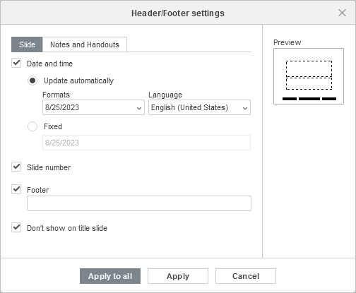
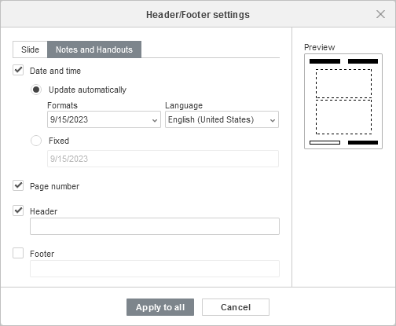
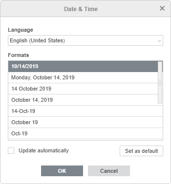

Umetnite zaglavlja i podnožja, beleške i handoute
Zaglavlja/podnožja omogućavaju dodavanje dodatnih informacija na slajd, kao što su datum i vreme, broj slajda ili tekst.
Da biste umetnuli zaglavlje/podnožje u Presentation Editor-u:
- prebacite se na tab Insert,
- kliknite na dugme Header & Footer na gornjoj alatnoj traci,
- otvoriće se prozor Header/Footer Settings. Izaberite jednu od dve kartice u zavisnosti od potreba: Slide ili Notes and Handouts.
-
Kartica Slide sadrži sledeća podešavanja:
-
Date and time – označite ovo polje da biste umetnuli datum ili vreme u izabranom formatu. Izabrani datum biće dodat u levo polje zaglavlja/podnožja slajda.
Navedite potreban format datuma:
-
Update automatically – označite ovu opciju ako želite da se datum i vreme automatski ažuriraju prema trenutnom datumu i vremenu.
Zatim izaberite potreban Format datuma i vremena i Language iz liste.
- Fixed – označite ovu opciju ako ne želite automatsko ažuriranje datuma i vremena.
-
Update automatically – označite ovu opciju ako želite da se datum i vreme automatski ažuriraju prema trenutnom datumu i vremenu.
- označite polje Slide number da biste umetnuli broj trenutnog slajda. Broj slajda biće dodat u desno polje zaglavlja/podnožja slajda.
- označite polje Footer da biste umetnuli proizvoljan tekst. Unesite potreban tekst u polje ispod. Tekst će biti dodat u centralno polje podnožja slajda.
- Promene se prikazuju u prozoru za pregled sa desne strane.

-
Date and time – označite ovo polje da biste umetnuli datum ili vreme u izabranom formatu. Izabrani datum biće dodat u levo polje zaglavlja/podnožja slajda.
-
Kartica Notes and Handouts sadrži informacije koje se štampaju zajedno sa sadržajem polja Notes. Ova kartica sadrži sledeća podešavanja:
-
Date and time – označite ovo polje da biste umetnuli datum ili vreme u izabranom formatu. Izabrani datum biće dodat u gornji desni ugao zaglavlja/podnožja beleški i handouta.
Navedite potreban format datuma:
-
Update automatically – označite ovu opciju ako želite da se datum i vreme automatski ažuriraju prema trenutnom datumu i vremenu.
Zatim izaberite potreban Format datuma i vremena i Language iz liste.
- Fixed – označite ovu opciju ako ne želite automatsko ažuriranje datuma i vremena.
-
Update automatically – označite ovu opciju ako želite da se datum i vreme automatski ažuriraju prema trenutnom datumu i vremenu.
- Page number – označite ovo polje ako želite da umetnete brojeve stranica u donji desni ugao zaglavlja/podnožja beleški i handouta.
- Header – unesite tekst koji će biti prikazan u zaglavlju beleški slajda u gornjem levom uglu zaglavlja/podnožja beleški i handouta.
- Footer – unesite tekst koji će biti prikazan u podnožju beleški slajda u donjem levom uglu zaglavlja/podnožja beleški i handouta.
- Promene se prikazuju u prozoru za pregled sa desne strane.

-
Date and time – označite ovo polje da biste umetnuli datum ili vreme u izabranom formatu. Izabrani datum biće dodat u gornji desni ugao zaglavlja/podnožja beleški i handouta.
- označite opciju Don't show on the title slide ako je potrebno,
- kliknite na dugme Apply to all da biste primenili izmene na sve slajdove ili koristite dugme Apply da biste primenili izmene samo na trenutni slajd.
Da biste brzo umetnuli datum ili broj slajda u podnožje izabranog slajda, možete koristiti opcije Show slide Number i Show Date and Time na kartici Slide Settings desne bočne trake. U tom slučaju, izabrana podešavanja će biti primenjena samo na trenutni slajd. Datum i vreme ili broj slajda dodati na ovaj način mogu se kasnije prilagoditi korišćenjem prozora Header/Footer Settings.
Da biste uredili dodato zaglavlje/podnožje, kliknite na dugme Header & Footer na gornjoj alatnoj traci, napravite potrebne izmene u prozoru Header/Footer Settings i kliknite na dugme Apply ili Apply to All da biste sačuvali izmene.
Umetnite datum i vreme i broj slajda u tekstualni okvir
Takođe je moguće umetnuti datum i vreme ili broj slajda u izabrani tekstualni okvir koristeći odgovarajuća dugmad na tabu Insert gornje alatne trake.
Umetnite datum i vreme
- postavite kursor miša unutar tekstualnog okvira u koji želite da umetnete datum i vreme,
- kliknite na dugme Date & Time na tabu Insert gornje alatne trake,
- izaberite potreban Language sa liste i željeni Format datuma i vremena u prozoru Date & Time,

- po potrebi označite polje Update automatically ili pritisnite polje Set as default da biste postavili izabrani format datuma i vremena kao podrazumevani za navedeni jezik,
- kliknite na dugme OK da biste primenili izmene.
Datum i vreme će biti umetnuti na trenutnu poziciju kursora. Da biste izmenili umetnuti datum i vreme,
- izaberite umetnuti datum i vreme u tekstualnom okviru,
- kliknite na dugme Date & Time na tabu Insert gornje alatne trake,
- izaberite potreban format u prozoru Date & Time,
- kliknite na dugme OK.
Umetnite broj slajda
- postavite kursor miša unutar tekstualnog okvira u koji želite da umetnete broj slajda,
- kliknite na dugme Slide Number na tabu Insert gornje alatne trake,
- označite polje Slide number u prozoru Header/Footer Settings,
- kliknite na dugme OK da biste primenili izmene.
Broj slajda će biti umetnut na trenutnu poziciju kursora.